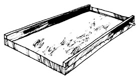

In past issues MOTHER has told you how to "grow yer own" honey and maple syrup. Now Mary Norwood would like to give you firsthand instructions in the flavorful southern art of producing yet a third homestead sugar substitute . . .
Is the high cost of maintaining a sweet tooth getting you down? Well, all over the South at this time of year, folks make a homegrown sugar substitute you might take kindly to: sorghum molasses.
Molasses is an easy-to-process, healthful food-rich in iron, sulfur, and other minerals-which can replace sugar or honey in many recipes. Its flavor is quite different from that of store-bought molasses (a sugarmaking by-product which has a strong aftertaste). Sorghum sweetening is more delicate, with a Country-morning quality and just a hint of sweet earth.
If you'd like to boil your own sweetening next fall, why not think about putting in some sorghum come planting time? Although the crop is traditionally a southern specialty, it will grow anywhere corn flourishes . . . and only a quarter of an acre-plus a little patience-will supply your family with 10 to 15 gallons of good molasses.
The seed (you'll need 5 to 10 pounds per acre) is available from many farm supply stores such as the FCX chain. Just be sure to ask for molasses -not silage-sorghum. I've planted Sugar Drip, with good results, but several other varieties are also widely used.
A sorghum field should be plowed or disked as deeply as possible, and then smoothed for planting. A sowing date of June 20 gave me grain mature enough for molasses-making by October 1 (possibly a little earlier) . . . but here in central North Carolina, the seeds could probably go into the ground any time from late May through the end of June.
I couldn't obtain the proper fitting to adapt my single-row planter to sorghum, and ended up with an overly thick sowing. It might have been better to plant the seeds by hand, 6 to 8 inches apart and 1 to 2 inches deep, in rows separated by 38 to 42 inches.
Sorghum needs 300 to 500 pounds of 8-8-8 fertilizer per acre added to the rows at planting time . . . not in contact with the seed, but 2 or 3 inches to the side. If you farm organically, enrich the soil in advance with compost and manure.
The young plants will appear in 3 to 5 days if the ground is moist, and will look very much like blades of grass for the first week or so. As soon as possible, hoe or plow between the rows to keep the earth free of weeds. Two or three such cultivations will be needed to protect the grain until it reaches a height of about 4 feet. From that stage until harvest time, the plants will shade out most of the weeds and grass . . . and all you'll have to do is pull any wild morning glory vines that spring up during the summer.
As the crop matures, small, reddish-brown seeds form on the topmost shoots. These are good, ground or whole, for livestock or poultry feed. In fact, sorghum ranks fourth-worldwide-as a cereal grain.
When the seed plumes begin to appear, cut a stalk near the ground, peel off the hard outer skin, and chew the inner pith which contains the pale green juice. Is the flavor fairly sweet? Good! It's time to begin your harvest. Take a knife (or two strong hands) and strip the leaves from the stalks as they stand in the field. Then cut the stems close to the ground, remove and save the seed clusters, and haul the canes to the grinding mill.
Actually, the grinding doesn't have to be done at once. The cut stalks can be stored a week or so without harm. Their juice content may diminish somewhat, but the amount of sugar they contain will remain fairly constant. It is essential, however, to use sorghum before the first real cold snap, since rainfall after a frost will cause the juices to ferment. If a sudden freeze does bite your crop, try to cut and grind it immediately . . . and if this isn't possible, at least harvest the grain and store it under shelter until it can be processed.
In some areas, you can haul your crop to the owner of a cane mill who will custom grind (actually, squeeze) the sorghum for you. Otherwise, you might be able to borrow a mill from a neighbor . . . or find one advertised for sale at a reasonable price in the "Farm Equipment" column of your local paper's classified section. I was able to find and buy a rugged old horse-drawn mill which bears a patent date of 1906. Now that I've replaced some bearings and converted the machine to run on a one-horsepower electric motor, it looks as good as new (except for some rust) and will press out 10 to 15 gallons of juice per hour.
(Note: In Organic Gardening and Farming for August of 7974, Gene Logsdon suggested that small amounts of sorghum can be processed by putting the stalks through a shredder-grinder and squeezing out the juice in a cider press.-MOTHER.)
For each 8 gallons of juice you extract, you'll wind up with 1 gallon of molasses . . . once you've boiled it down in an evaporator. If you can't find such a container for sale, you can make your own. Simply obtain a piece of galvanized sheet metal 3 to 4 feet by 8 feet and bend up the two ends to a height of 6 inches. (Galvanized metal is an undesirable container for food-especially food which is heated-because of possible contamination from Its zinc coating. Anyone have a better idea?-MOTHER.) Cut two 1 X 6 boards-it's best not to use a resinous wood such as pine, which might add an "off" flavor to the molasses-to fit exactly between the, tray's turned-up ends. Then attach the metal to the wooden sides with small roofing nails. (I placed a line of caulking between the parts before nailing.)
The finished evaporator-or pan, as it's often called-should be 5 or 6 inches deep and about 3-1/2 feet wide. In one corner, drill a 1 -inch hole through the wooden side near the bottom and fit it with a wooden stopper. This opening is used to drain off the finished molasses.
I should mention that some molasses-makers use a multi-compartment pan, starting the green juice at one end and advancing it as each successive batch is drawn off. This system makes good sweetening, but also requires four or more people to dip the cooking liquids from section to section . . . and careful control is needed to keep the syrup from scorching as one lot is exchanged for another. I prefer the simpler single-batch method which allows one person to tend the molasses and press more juice at the same time.
The pan must rest on a furnace, which you can build from stone and clay . . . or better, brick and mortar. The structure should be about 30 inches high, with a top 4 inches narrower than the width of the evaporator. The difference allows the pan to overhang 2 inches on either side which keeps the wooden sides from burning. Make sure, also, that the syrup container will be level when set over the fire. I built a shelter over my fireplace, and installed an 8-inch flue pipe at the back of the furnace to take off the smoke through the roof.
When 40 to 60 gallons of juice have been squeezed out of the sorghum, strain the liquid-first through burlap, then twice more through a finely woven cotton sack-and pour it into the pan. Then build a fire in the furnace and boil the juice. I use dry oak for fuel, but any seasoned hardwood will provide an even-burning source of heat. Except when I'm tending the fire, I keep a sheet of metal over the mouth of the fireplace as a draft to control the rate of combustion.
As the juice boils, a scum rises on the surface of the syrup and must be skimmed off. You can do this with a skimmer that looks like a big, stiff fly swatter and which is easily made from window screen. You'll be adding fresh liquid occasionally as the batch cooks down, and will find that impurities continue to cook out for about an hour each time.
Carry on boiling and skimming as necessary until the juice has been reduced to about an eighth of its original volume. At this point the product is a rich brown color and has a molasses-sweet smell.
As the syrup becomes thicker and darker, allow the rate of boiling to diminish by slowing the fire. Then take up some of the hot juice in a dipper and pour it slowly back into the pan. When it begins to form strings or drip off the spoon in sheets, the liquid's viscosity is at the right point and the cooking must be stopped. Quickly put out the fire, remove the drain plug, and strain the contents one last time as the syrup runs into a metal container. (Don't use plastic, which will be melted or deformed by the heat of the molasses.)
After the syrup has cooled for about an hour, it's ready to be funneled into final storage containers such as pint or quart glass jars. It should be a rich red or brown color, translucent, and not too thick. Any foam on top will melt back into the contents within a few days.
If the molasses has been overcooked, grains of sugar will form and settle to the bottom of the containers. In that case, a little water may be added and the mixture heated gently once again to get the crystals back into solution. When you're sure the sweetening is perfect, store it in a cool dark place. It'll keep for years, if necessary.
I find it especially interesting to use sorghum molasses because-like wine-it varies according to the field and season in which the grain was grown. Vegetables are often enhanced by a spoonful or two, and sweet potatoes and baked ham are more flavorful if basted with a homemade sweetening mixture. Many country cookbooks offer cookie and candy recipes that call for molasses instead of sugar. (Sorghum taffy is delicious, and a lot of fun to make.) Best of all, in my opinion, is molasses and butter spread on hot homemade biscuits.
One more thought: Good homemade molasses is hard to come by, and the demand exceeds the supply. If you make a quality product, free of seeds (which impart bitterness) and leaves (which cause a rank taste), you'll find a ready market. For a bit of extra cash-or just the fun of making and using your own sweetening-why not try a sorghum crop next year?
|
Leaves are stripped from standing sorghum canes at harvest. |
 An evaporator is easily built from boards and sheet metal. |
The bars in the furnace support the wood for better burning. |
|
As the batch cooks down, more juice is pressed in the mill. |
|
|